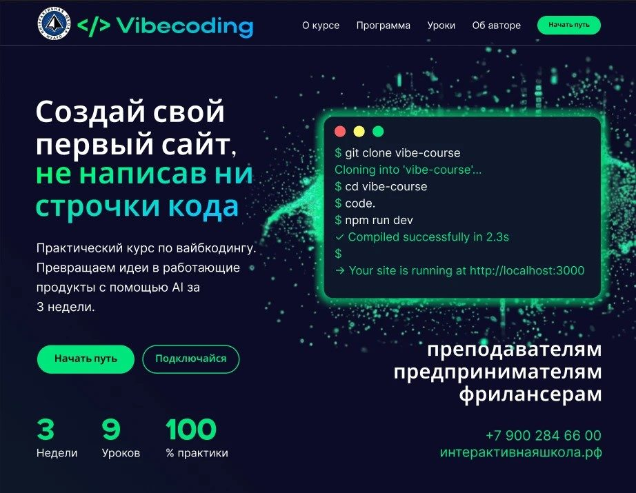

Между уроками ученику нужно практиковаться самому. И тут у преподавателя всегда одна и та же проблема: чтобы дать ребёнку тренажёр на Past Simple или на дроби, нужно найти подходящий ресурс или сесть и сверстать его самостоятельно. Час работы минимум — если делать хорошо.
Летом 2026 года мы решили эту задачу иначе. Мы взяли наш обычный цикл разработки и переставили в нём роли: черновую работу отдали нейросети, а смысл, методику и качество оставили себе. В итоге за лето появился каталог из 60 интерактивных инструментов — игр, тренажёров и онлайн-курсов, которыми пользуются наши ученики.
Ниже — честный разбор: что именно машина сделала за нас, а что всё равно пришлось делать руками. Без этого рассказ был бы просто рекламой.
Что получилось в цифрах
Мы не считали «сколько ИИ нам сэкономил» — это величина, которую легко выдумать. Вместо этого приводим то, что можно проверить: количество материалов и покрытие направлений.
| Показатель | Значение |
|---|---|
| Всего инструментов на 7 страницах направлений | 60 |
| из них игр и тренажёров | 45 |
| из них готовых уроков и курсов | 15 |
| Уникальных игр (без дублей между направлениями) | 40 |
| Уникальных материалов всего | 52 |
| Языки и предметы | английский, испанский, французский, немецкий, математика |
| Коммитов в репозитории проекта | 206 с апреля 2026 |
Пять игр стоят сразу в двух разделах — в «Английском» и в «Математике». Это не опечатка: например, Water Filter Challenge одновременно тренирует английскую лексику и решает задачу по фильтрации воды — это наша методика CLIL, где язык работает как инструмент предмета, а не как цель.
Самый честный вывод лета: ИИ хорошо делает форму (если указано направление) и очень плохо делает содержание. Форму долго генерировать вручную - экономия времни.
Как мы разделили работу
Это главная часть опыта. Мы сели и записали по пунктам, что в нашем процессе реально ускоряется машиной, а что нет.
| Задача | ИИ | Преподаватель |
|---|---|---|
| Черновой прототип | собирает рабочую версию за вечер | — |
| Вёрстка, стили, адаптив под телефон | делает сразу, достаточно аккуратно | — |
| Тексты, формулировки заданий, подсказки | черновик за минуты | проверяет, переписывает под свой почерк и под уровень ученика |
| Озвучка и иллюстрации | генерирует | — |
| Методика: что вообще тренировать | — | решает целиком |
| Подбор лексики под уровень A1 / B1 / B2 | предлагает варианты | выбирает и проверяет по рабочим программам |
| Тест на живом ученике | — | обязателен, без него не публикуем |
Видно главное: чем ближе задача к смыслу и к ребёнку, тем меньше её можно отдать. Вёрстку можно делегировать полностью, а решение о том, что ученик должен понять на этом экране, — нельзя.
Три инструмента, которые показывают модель
Приведём конкретные примеры — так понятнее, чем абстрактные описания.
Water Filter Challenge — язык через науку
STEM-игра уровня B1: ребёнок строит фильтр для воды и по ходу работы использует английскую лексику. Идея и привязка к теме фильтрации — наша, CLIL-подход. Прототип, вёрстка и цепочка уровней — собраны за вечер.
Crazy Chef — ролевая игра на французском
Ролевая игра: готовим блюда, смешиваем ингредиенты, учим кулинарную лексику. Здесь мы вручную вычитывали каждое французское слово и убирали всё, что было бы слишком сложно для уровня, на котором игра выдаётся ученику. Машина напишет текст быстрее, но такую ошибку не заметит никто, кроме нас.
Pizza Master — дроби без слёз
Игра про дроби на сложение и вычитание с разными знаменателями — на примере пиццы. Метафора с пиццей придумана не нейросетью: это методическая находка, без которой абстрактные дроби большинство детей не щёлкают.
Отдельный класс инструментов — тренажёры формата экзамена: B2 First for Schools, PET Exam Reading, Тренажёр DELF A1. Здесь машина особенно полезна: объём однотипной работы огромный, а человеку остаётся проверить, что задания соответствуют реальному формату экзамена.
Чего ИИ делать не надо
Этот раздел мы оставляем специально — чтобы было видно границу.
- Решать, чему учить. Метафоризацию, уровень сложности и то, какая тема нужна именно этому ученику сейчас, определяет преподаватель. Ни одна нейросеть не знает, что этот конкретный ребёнок путает артикли.
- Проверять фактуру. Формат экзамена, формулировки заданий и тексты нужно сверять с официальными источниками — ФИПИ, Cambridge, DELF. Ошибка в условии задания выглядит для ученика как ошибка в предмете.
- Заменять живое объяснение. Тренажёр отлично тренирует, но не объясняет, почему этот ученик ошибается. Это делает преподаватель на уроке.
- Публиковать без проверки на человеке. Мы не выкладываем игру, пока её не прошёл живой ученик и не подтвердил, что в ней есть смысл.
С чего начать, если хочется попробовать
Не нужно сразу делать шестьдесят. Начните с одной задачи, которую вы и так объясняете каждый месяц, и посмотрите, сколько времени это занимает.
Загляните в разделы наших направлений — там собраны все инструменты по темам, с уровнями и описаниями: английский, испанский, французский, немецкий, русский, математика. Полный список — в разделе «Интерактивные игры» в Блоге. Большинство из них работает в браузере, ничего устанавливать не нужно, и открыть их можно с телефона.
Если хочется попробовать делать такие инструменты самому — у нас есть курс «Вайбкодинг»: 3 проекта за 3 недели, с готовым портфолио на выходе.
